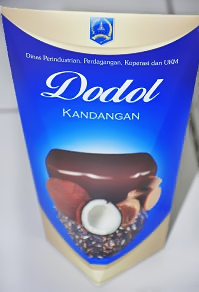
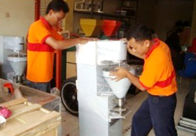
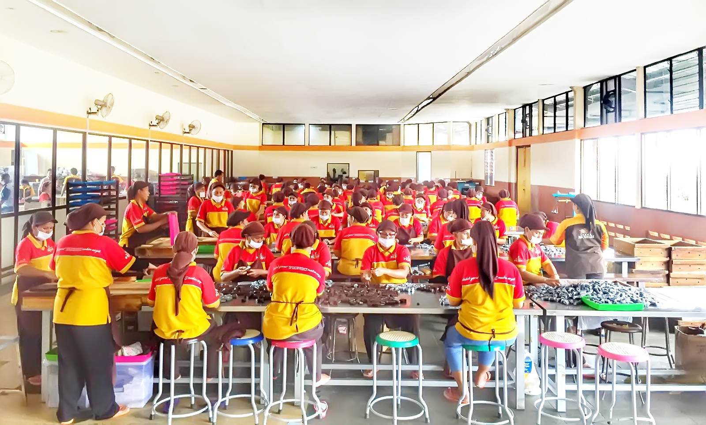
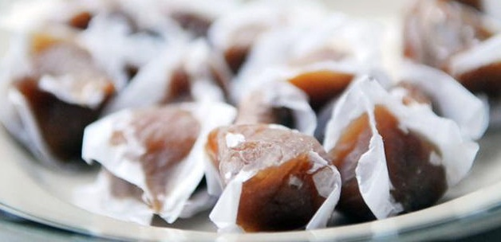
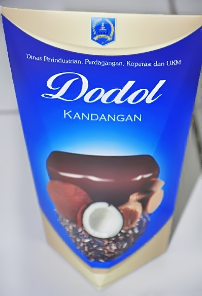
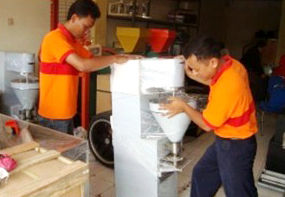
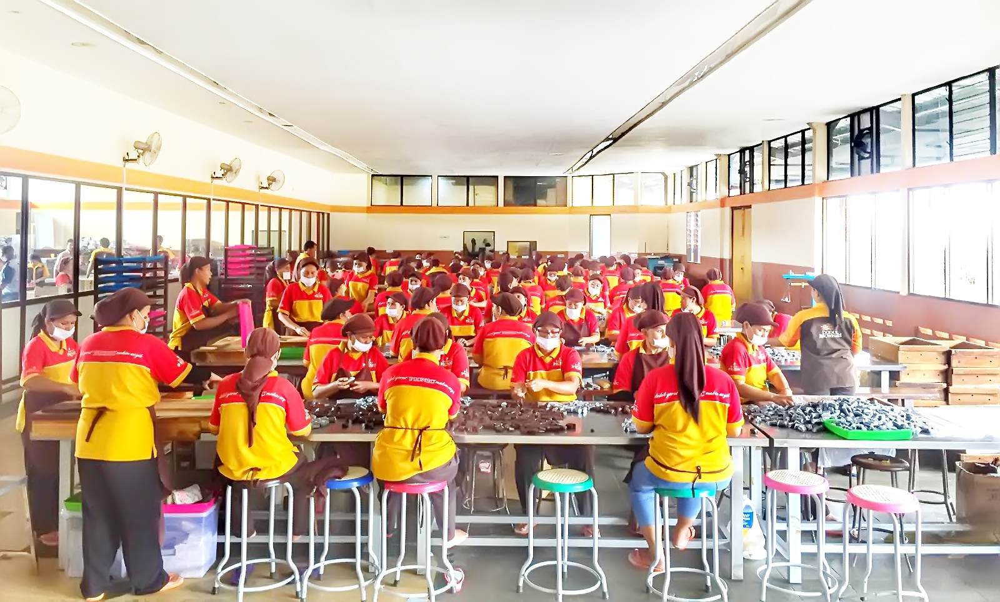
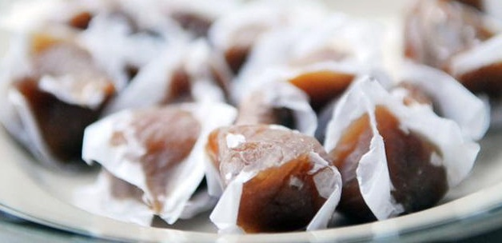
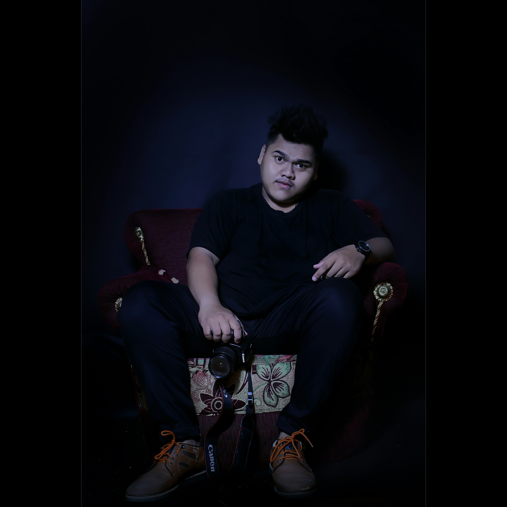

TEAM

PRODUK

PENGOLAH

PEMBUNGKUSAN

PENYAJIAN





Bisa untuk cemilan waktu diperjalanan
Cocok untuk cemilan waktu ngumpul keluarga
Sangat pas buat oleh-oleh untuk keluarga
Dengan harga yang murah tentunya tidak membuat kantong kalian kering
Jl. A.YANI No.34 KANDANGAN KALSEL, Indonesia
Phone : 0858 2825 7742
Fax : 0511 3242 143
Email : supianor97@gmail.com
Jl. Demak (Purwodadi Utara) No.370C RT.01 RW.04 Surabaya JATIM.
Phone : 031 352 0376
Fax : 031 352 0376
Email : iwan_pandawa@ymail.com
Jl. Swasembada Barat XVI No.58B Kebun Bawang Tanjung Priok Jakarta Utara.
Phone : 0851 0051 9919
Fax : -
Email : -
Jl. PU No.112 RT.02 Kelurahan Baqa Samarinda KALTIM.
Phone : 0813 5059 3800
Fax : 0541 271 544
Email : -
Jl. Lumbung Sari III No.28 Semarang JATENG.
Phone : 0813 4967 7655
Fax : 0511 3363 411
Email : ibnumusa61@gmail.com
Jl. Letjen Suprapto No.45 RT.43 Baru Ulu Balikpapan KALTIM.
Phone : 0711 546 784
Fax : 0542 419 654
Email : -
Jl. Komp. Yos Sudarso Gang Jagung 18 Pontianak KALBAR.
Phone : 0812 8939 4436
Fax : 0561 770 502
Email : -
Jl. Lagumba No. 08 RT.02/05 Kel. Mamboro Kec. Palu Utara SULSEL.
Phone : 0813 5787 664
Fax : -
Email : lidiapandawapalu@yahoo.com
Jl. Panglima Utar No. 663 RT.08 Sungai Kapitan Kumai KALTENG.
Phone
Phone : 0813 5297 5569
Fax : -
Email : -
